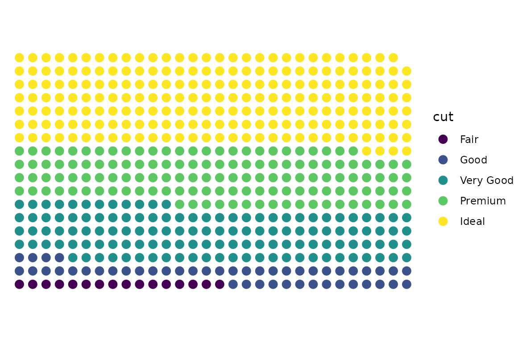

Miscellaneous Examples
Doug Kelkhoff
2025-03-02 19:33:40.853327
Source:vignettes/miscellaneous-examples.Rmd
miscellaneous-examples.RmdDot Matrix Plots
ggpk_dot_matrix <- function(..., width = 10) {
ggpacket(...) %+%
geom_point(
data = . %>%
mutate(
xvar = (seq_len(nrow(.)) - 1) %% width,
yvar = (seq_len(nrow(.)) - 1) %/% width
),
mapping = aes(x = xvar, y = yvar),
...
) %+%
theme_void() %+%
coord_fixed()
}
library(dplyr)
diamonds %>%
sample_frac(0.01) %>%
arrange(cut) %>%
ggplot() +
aes(color = cut) +
ggpk_dot_matrix(size = 3, width = 30)
Tukey Ribbons
ggpk_tukey_ribbons <- function(...) {
tukey_whisker_min <- function(x) {
x[head(which(x > quantile(x, 0.25, names = FALSE) - 1.5 * IQR(x)), 1)]
}
tukey_whisker_max <- function(x) {
x[tail(which(x < quantile(x, 0.75, names = FALSE) + 1.5 * IQR(x)), 1)]
}
ggpacket(...) %+%
# Tukey Box Edges
geom_ribbon(
.id = "box",
mapping = aes(fill = ..color..),
stat = "summary",
fun = median,
fun.min = ~quantile(., 0.25, names = FALSE),
fun.max = ~quantile(., 0.75, names = FALSE),
alpha = 0.15,
...,
color = NA
) %+%
# Tukey Whiskers
geom_ribbon(
.id = "whisker",
mapping = aes(fill = ..color..),
stat = "summary",
fun = median,
fun.min = tukey_whisker_min,
fun.max = tukey_whisker_max,
alpha = 0.15,
...,
color = NA
) %+%
# Median Line
geom_line(
.id = list(NULL, "line"),
stat = "summary",
fun = median,
alpha = 0.8,
...
)
}
library(dplyr)
economics_long %>%
filter(variable %in% c("pop", "unemploy")) %>%
mutate(
year = as.integer(format(as.Date(date, format = "%Y-%m-%d"), "%Y"))
) %>%
ggplot() +
aes(x = year, y = value, color = variable) +
ggpk_tukey_ribbons() +
scale_y_log10()